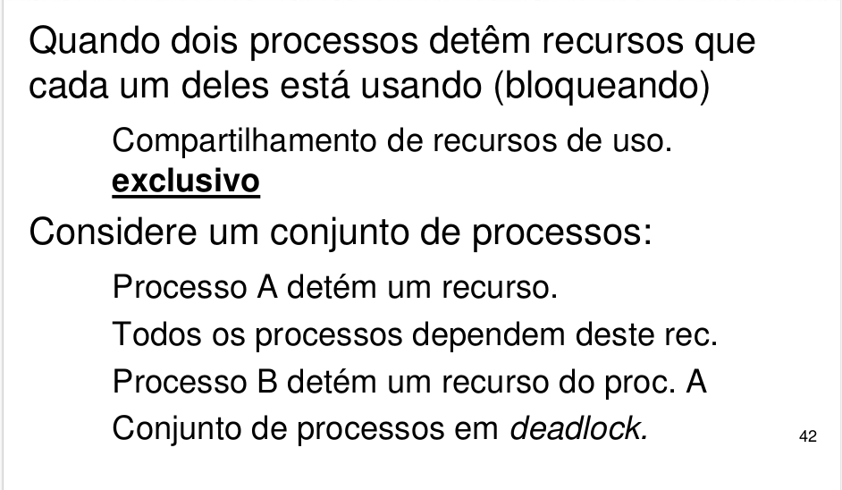
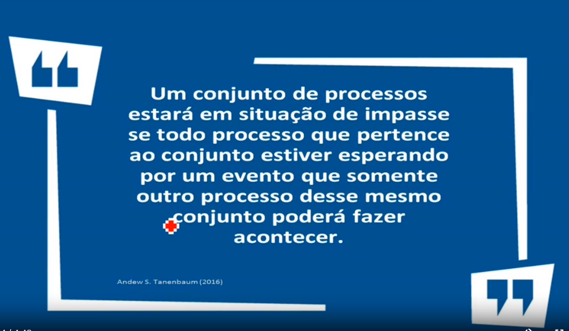
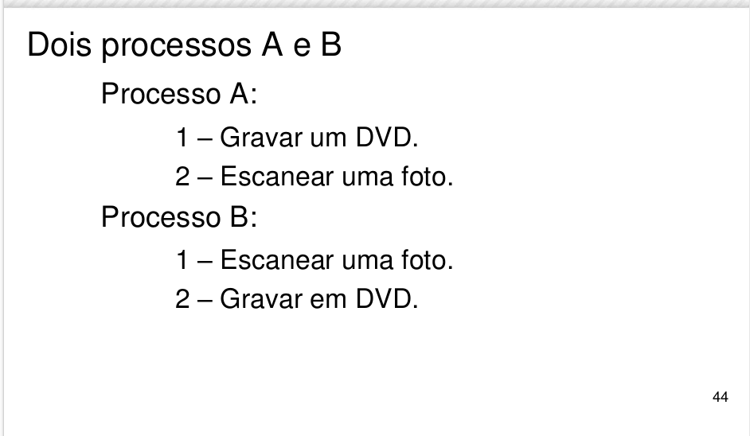
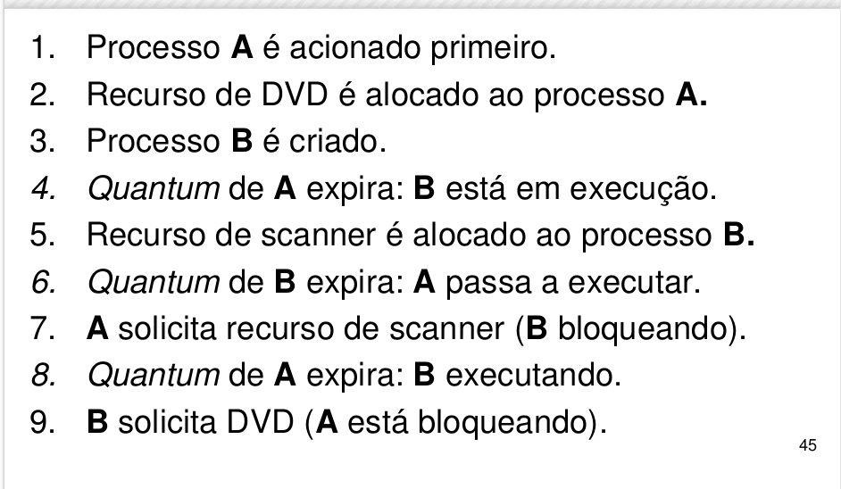
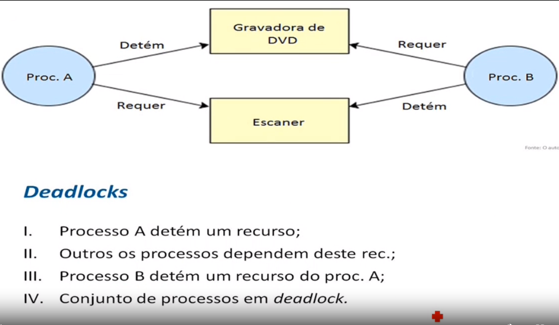
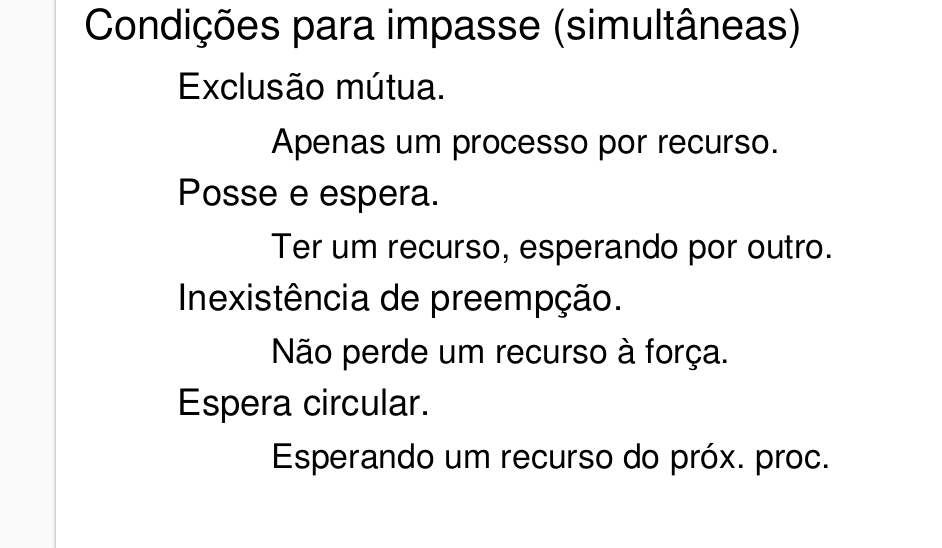

Objetivos de Aprendizagem
- Apresentar definições de processos e as técnicas que o sistema operacional utiliza para garantir rapidez e confiabilidade no que foi solicitado pelo usuário.
- AIdentificar as situações de possíveis conflitos entre processos e como o sistema operacional trabalha com estes impasses.
INTRODUÇÃO
Impasse I Deadlock


Impasse/Deadlock
Até o momento aprendemos o que são processos, que eles são formados por um ou muitos threads, como eles realizam a comunicação entre si e como o sistema operacional decide qual processo será executado primeiro.
Temos que ter em nossa mente que a tarefa do sistema operacional não é nada fácil, já que muitos processos estão solicitando para serem processados. E por mais que tenhamos inúmeros recursos em nossos computadores, somente um processo de cada vez pode usá-lo.
Podemos citar como recurso uma impressora, gravador de CD-ROM, scanner entre outros. Quando dois (no mínimo) processos estiverem dependendo do recurso que cada um está usando (e bloqueando), temos uma situação de impasse, também chamada de deadlock.
Tanenbaum (2010, p. 271) define impasse ao dizer que “um conjunto de processos estará em situação de impasse se todo processo pertencente ao conjunto estiver esperando por um evento que somente outro processo desse mesmo conjunto poderá fazer acontecer”
Vamos exemplificar:



Teremos dois processos (A e B) e eles irão utilizar recursos do computador (gravadora de DVD e scanner). Os processos realizam as seguintes tarefas:
- Processo A: gravar um DVD e após finalizar a gravação, acione o scanner para digitalizar uma imagem.
- Processo B:: digitalizar uma imagem e logo após o envio ao monitor, utilizar a unidade de DVD.
Como o processo A foi primeiro acionado, a unidade de DVD foi disponibilizada para este processo. Logo em seguida, o usuário solicitou a criação do processo B. O escalonamento round-robin iniciou o processo B que tomou posse do recurso scanner.
Após o chaveamento circular, o processo A finalizou o uso da unidade de DVD e solicitou o uso do scanner, mas o mesmo encontra-se bloqueado pelo processo B. Após a finalização do quantum do processo A, o processo B entrou em atividade e finalizou o uso do scanner e solicitou o uso da unidade de DVD, mas a mesma encontra-se bloqueada pelo processo A.
Acabamos de perceber o impasse entre dois processos e seus recursos. Em resumo, nenhum processo irá ser concluído a não ser que seja finalizado por parte do usuário.
Para que um impasse ocorra, quatros condições têm que ocorrer simultaneamente:
- Exclusão mútua: um recurso pode ser usado apenas por um processo de cada vez. Caso outro processo solicite este recurso, o processo solicitante deve ser atrasado até o recurso ser liberado.
- Posse e espera: um processo deve estar de posse de pelo menos um recurso e esperando para adquirir recursos adicionais que estejam sendo mantidos por outros processos
- Inexistência de preempção: um recurso, previamente concedido a um processo, não pode ser forçosamente tomado deste processo. O recurso só pode ser liberado voluntariamente pelo processo que o estiver mantendo após esse processo ter concluído a sua tarefa.
- Espera circular: deve existir um encadeamento circular de dois ou mais processos. Cada um deles encontra-se à espera de um recurso que está sendo usado pelo membro seguinte dessa cadeia.

PREVENÇÃO DE IMPASSES
Conforme visto acima, um impasse ocorre se as quatro condições existirem simultaneamente. Se assegurarmos que pelo menos uma das condições nunca ocorra, garantimos um sistema operacional sem impasse. Podemos definir as seguintes estratégias:
- Atacar a condição de exclusão mútua: todo e qualquer alocação de recurso deve ser feito somente se for realmente necessário. Além disto, deverá ser assegurado que o menor número possível de processos possa, de fato, requisitar o recurso.
- Atacar a condição de posse e esperar: garantir que sempre que um processo requisitar um recurso, ele não esteja em posse de nenhum outro recurso. Ou, então, quando o processo requisita recursos, todos devem estar disponíveis para que a execução do mesmo ocorra.
- Atacar a condição de inexistência de preempção: um processo em posse de um recurso solicita outro recurso que não pode ser alocado imediatamente a ele. A preempção irá fazer com que a cada ciclo de tempo o recurso seja usado por um processo. Esta situação é perigosa, imagine vários processos solicitando uso da impressora e devido à preempção cada linha impressa é referente a um processo. No final da impressão teríamos documentos impressos de forma errada.
- Atacar a esperar circular: para garantir que esta condição não ocorra, é
imposta uma ordenação a todos os tipos de recursos. Um processo pode
requisitar recursos sempre que necessário, mas todas as solicitações devem
ser feitas em ordem numérica. Vamos imaginar a seguinte lista de recursos enumerada:
- Impressora
- Unidade de CD-ROM
- Scanner
CONSIDERAÇÕES FINAIS
Caro(a) aluno(a), você acabou de perceber o quão difícil é o trabalho do sistema operacional para gerenciar os diversos programas por nós utilizados. O primeiro passo que você deve realizar é identificar qual o tipo de computador e de sistema operacional você está utilizando e isto você aprendeu na unidade I.
Caso você esteja utilizando Windows ou Linux, você está utilizando um SO que consegue trabalhar com vários processos ao mesmo tempo. E cada processo irá possuir pelo menos um thread e cabe aos algoritmos de escalonamento gerenciar a utilização ordenada da CPU por parte dos processos, impedindo que um processo fique eternamente sendo executado pela CPU.
As estratégias para comunicação entre processos servem para evitar a condição de disputa. Dentre estas estratégias vale a pena citar os semáforos, mutex, instruções TSL e a solução de Peterson. Caso a estratégia ou escalonamento falhem, iremos ter problemas de travamento de programas e possíveis travamentos do sistema operacional (a famosa tela azul do Windows).
O assunto abordado nesta unidade talvez seja o mais complexo dentre os estudos referente a sistemas operacionais e o entendimento desta unidade é vital para que você consiga garantir rapidez, confiabilidade e disponibilidade em sistemas operacionais.
Logo a seguir, iremos aprender sobre a utilização de espaços de memória por parte dos processos.